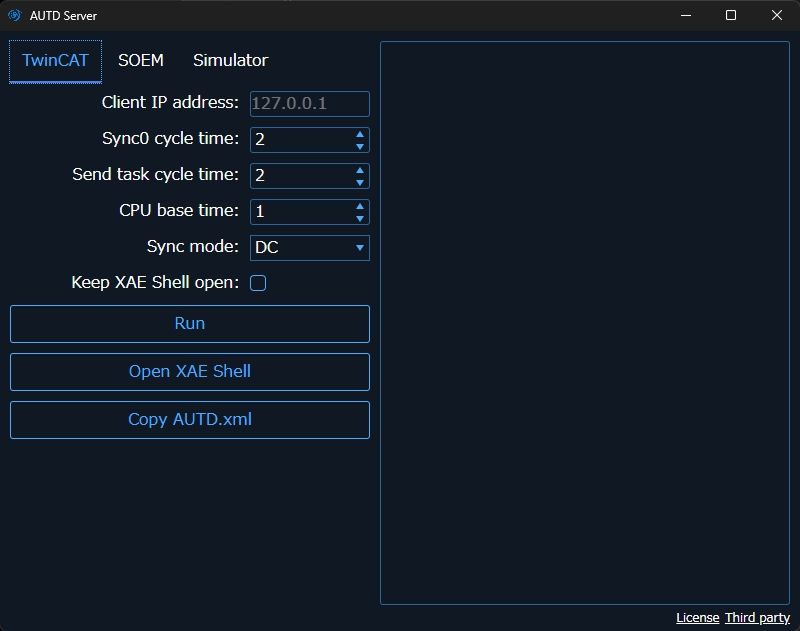
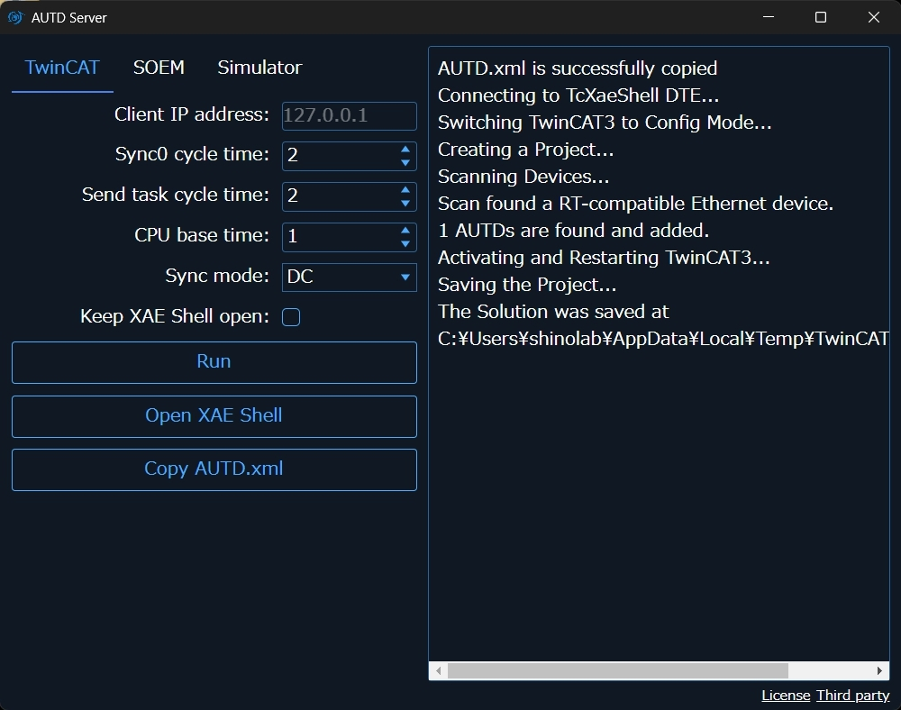

TwinCAT
TwinCAT is the only official way to use EtherCAT on a Windows PC. TwinCAT is specialized software that only supports Windows and forces Windows to operate in real-time.
TwinCAT requires specific network controllers, so please check the list of compatible network controllers.
Note: Alternatively, after installing TwinCAT, you can see the Vendor ID and Device ID of supported network controllers in
C:/TwinCAT/3.1/Driver/System/TcI8254x.inf. The Vendor ID and Device ID of your network controller can be checked in “Device Manager” → “Ethernet Adapter” → “Properties” → “Details” → “Hardware ID”.
It may work with network controllers other than those listed above, but in that case, normal operation and real-time performance are not guaranteed.
Prerequisites
As a prerequisite, TwinCAT cannot coexist with Hyper-V or Virtual Machine Platform. Therefore, these features need to be disabled. For example, you can disable them by opening PowerShell with administrator privileges and typing:
Disable-WindowsOptionalFeature -Online -FeatureName Microsoft-Hyper-V-Hypervisor
Disable-WindowsOptionalFeature -Online -FeatureName VirtualMachinePlatform
Also, for Windows 11, you need to turn off the virtualization-based security feature.
Go to “Windows Security” → “Device Security” → “Core Isolation” → “Memory Integrity” and turn it off.
From Windows 11 24H2, you may also need to set the registry value HKEY_LOCAL_MACHINE\SYSTEM\CurrentControlSet\Control\DeviceGuard\EnableVirtualizationBasedSecurity to 0.
Installing TwinCAT
Refer to the official site and install TwinCAT 3.1 Build 4026. (You will need to register for a myBeckhoff account (free) to install it.) Make sure to install the 64-bit version of TwinCAT Xae Shell. Visual Studio Integration is not required.
After installing the Package Manager, you can install “TwinCAT Standard” using the Package Manager.
Installing AUTD3 Server
To use TwinCAT Link, you first need to install AUTD3 Server.
The installer is distributed on GitHub, so download it and follow the instructions to install it.
NOTE: There is also a CLI version.
When you run AUTD3 Server, the following screen will appear, so open the TwinCAT tab.

Initial Setup
The following tasks are required only for the first time.
First, press the “Copy AUTD.xml” button. If a message like “AUTD.xml is successfully copied” appears, it is successful.
Next, press the “Open XAE Shell” button to open the XAE Shell. From the top menu of TwinCAT XAE Shell, open “TwinCAT” → “Show Realtime Ethernet Compatible Devices”, select the compatible device from “Compatible devices”, and click Install. If the installed adapter is displayed in “Installed and ready to use devices (realtime capable)”, it is successful.
If nothing is displayed in “Compatible devices”, the Ethernet device of that PC is not compatible with TwinCAT. Drivers in “Incompatible devices” can also be installed, and if installed, they will be displayed as “Installed and ready to use devices (for demo use only)”. In this case, it can be used but is not guaranteed to work.
Running AUTD Server
Connect AUTD3 to the PC and with AUTD3 powered on, press the “Run” button. At this time, leave the “Client IP address” field blank.
If a message appears indicating that the AUTD3 device has been found, as shown in the screen below, it is successful.

Note that TwinCAT will disconnect when the PC is powered off, enters sleep mode, etc., so you need to run it again each time.
License
If you encounter license-related errors, set the license. After setting the license, close “TwinCAT XAE Shell” and run it again.
If you have not set the license yet, you can issue a 7-day trial license using the following method.
Issuing a Trial License
Open “Solution Explorer” → “SYSTEM” → “License” in XAE Shell, click “7 Days Trial License …”, and enter the characters displayed on the screen.
TwinCAT Link
Install
cargo add autd3-link-twincat
target_link_libraries(<TARGET> PRIVATE autd3::link::twincat)
Included in the main library.
Included in the main library.
Included in the main library.
APIs
use autd3_link_twincat::TwinCAT;
fn main() -> Result<(), Box<dyn std::error::Error>> {
let _ =
TwinCAT::new()?;
Ok(())
}#include "autd3/link/twincat.hpp"
int main() {
using namespace autd3;
link::TwinCAT();
return 0; }
using AUTD3Sharp.Link;
new TwinCAT();
from pyautd3.link.twincat import TwinCAT
TwinCAT()
Troubleshooting
When trying to use a large number of devices, an error like the one shown below may occur.

In this case, increase the values of Sync0 cycle time and Send task cycle time in AUTD3 Server, and run AUTD Server again.
The default values for these options are each.
The appropriate values depend on the number of devices connected. The smallest possible value that does not cause an error is desirable. For example, for 9 devices, a value of about – should work.